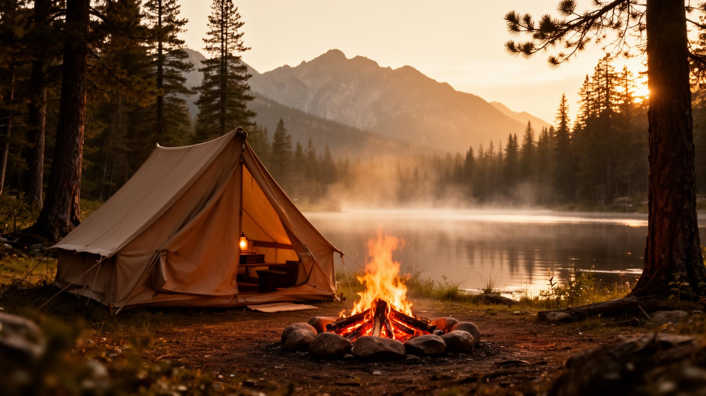
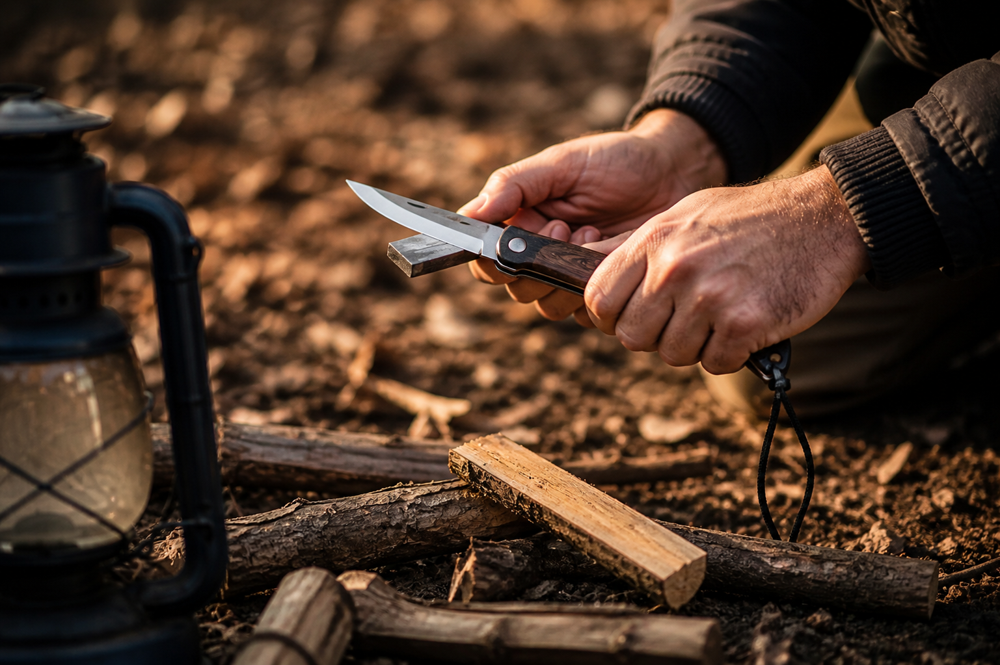
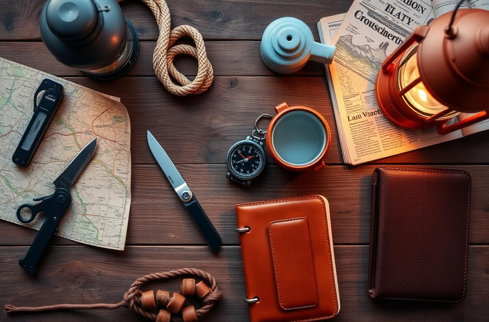
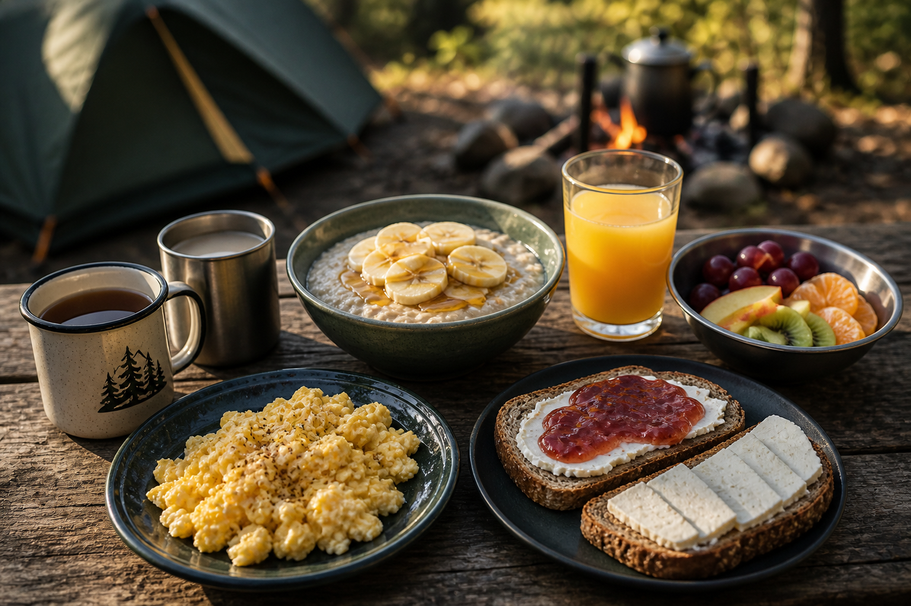
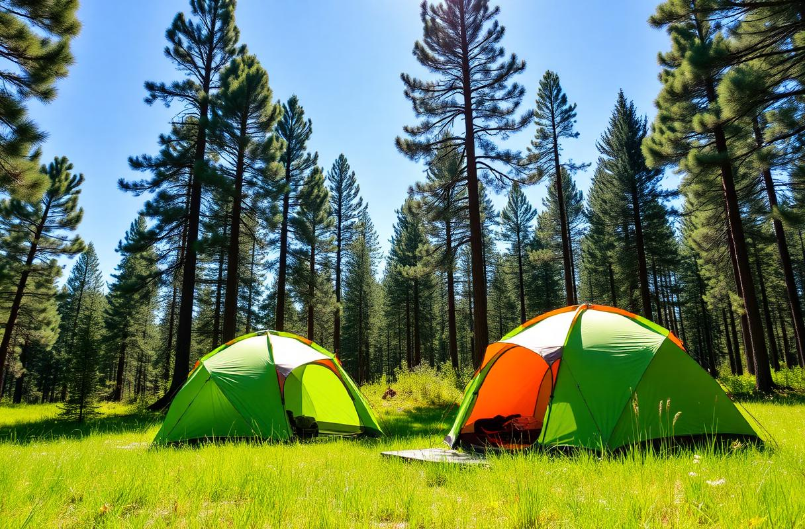
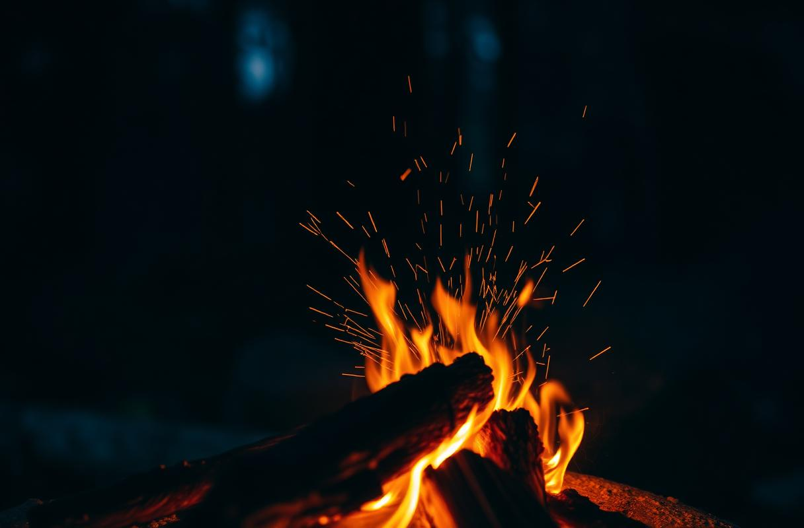

Tudo o que um Desbravador precisa saber para erguer sua barraca, acender uma fogueira segura e dormir sob as estrelas — uma jornada ilustrada pela especialidade mais clássica do clube.
Escolher o local de acampamento é o primeiro — e talvez o mais importante — ato do acampante. Antes de qualquer estaca ser fincada, é preciso observar três coisas: o tempo, a estação do ano e as fontes de água. Negligenciar qualquer uma delas pode transformar uma noite tranquila em uma experiência perigosa.
Condições do tempo. Verifique sempre a previsão antes de sair. Evite áreas baixas e leitos secos de rio: uma chuva forte a quilômetros de distância pode encher tudo em minutos. Em dias quentes, prefira sombra parcial; em dias frios, locais protegidos do vento. Nunca arme a barraca debaixo de árvores muito altas, isoladas, mortas ou com galhos secos pendurados ("galhos viúvos") — caem facilmente com vento e atraem raios.
Estação do ano. No verão, busque ventilação e sombra; no inverno, procure abrigo natural contra o vento, terreno seco e exposição ao sol da manhã para esquentar o acampamento. Na primavera e no outono, atenção às mudanças bruscas de tempo.
Fontes de água. Acampe próximo o suficiente de uma fonte de água limpa para cozinhar e se higienizar, mas nunca a menos de 60 m dela, pois isso protege o curso d'água da contaminação, evita insetos e o risco de enchente. Sempre trate a água antes de beber — fervendo, filtrando ou usando pastilhas.
"Quem observa a natureza, acampa com segurança."

Plano, levemente elevado, sem pedras pontudas, formigueiros ou raízes. Cave uma pequena vala ao redor da barraca em caso de chuva.
Identifique a direção do vento dominante e posicione a entrada da barraca ao contrário. A fogueira fica a sotavento, longe da barraca.
Sol da manhã esquenta e seca o orvalho; sombra à tarde alivia o calor. Observe por onde nasce e se põe o sol antes de armar.
A roupa é o primeiro abrigo do acampante. A regra de ouro no frio é vestir-se em camadas (a famosa "técnica das três camadas"): assim você adiciona ou remove peças conforme a temperatura muda.
Regra de ouro: nunca durma com a roupa que usou durante o dia — ela está úmida de suor, mesmo que não pareça, e vai roubar seu calor a noite inteira.
Acampar é seguro quando o acampante é responsável. Estas regras valem para todos — Desbravadores, conselheiros e diretoria.
Nunca se afaste do acampamento sozinho ou sem avisar um responsável. Ande sempre acompanhado, em duplas ou trios.
A fogueira só se acende em local preparado, longe de barracas, mato seco e galhos baixos. Apague completamente antes de dormir e antes de partir.
Canivete, machado e facão têm lugar próprio. Nunca brincar com lâminas. Ferramenta usada — ferramenta guardada.
Beba apenas água tratada. Lave as mãos antes das refeições. Guarde alimentos em recipientes fechados, longe do chão.
Não toque em animais silvestres nem em plantas desconhecidas. Sacuda calçados antes de calçar — escorpiões e aranhas se escondem.
O acampamento sempre tem um kit visível e identificado. Comunique imediatamente qualquer ferimento, por menor que seja.
Banho em rios, lagos ou piscinas só com autorização e supervisão de um adulto. Nunca sozinho, nunca à noite.
Após o toque de recolher, todos dentro de suas barracas. Lanternas apagadas, vozes baixas — respeito ao descanso e à natureza.
Em caso de raios, abrigue-se em construção fechada se possível; nunca sob árvore isolada nem segurando objetos metálicos.

O canivete é o fiel companheiro do acampante: corta cordas, prepara gravetos, descasca varas e auxilia em mil tarefas. Mas é também a ferramenta que mais machuca quem não a respeita.
Galhos secos, finos e sem fungos. Madeira verde não pega fogo; madeira podre faz fumaça e some sem brasa.
Apoie o graveto em base firme. Com a lâmina inclinada, raspe lascas finíssimas (chamadas "feather sticks" ou penas) — pegam fogo só com uma faísca.
Três pilhas: gravetos finos como palito (isca), médios como lápis (acendalha) e grossos como dedo (combustível principal).
Saber utilizar ferramentas de campo com responsabilidade faz parte da formação do acampante.
Ideal para cortar cordas, preparar gravetos, descascar pequenos galhos e realizar trabalhos delicados com madeira.
A machadinha é utilizada para cortar ou rachar pequenos pedaços de madeira e preparar combustível para a fogueira.
O machado exige mais espaço, força e controle. É usado para cortar ou rachar peças maiores de madeira.
O facão pode ser usado para limpar vegetação já autorizada, cortar cipós, pequenos galhos e preparar materiais para pioneiria.
Utilizada para abrir buracos estreitos e profundos, especialmente na colocação de postes e estruturas de acampamento.
A picareta é usada para quebrar terrenos compactados, remover pequenas pedras e preparar áreas difíceis.
"Ferramenta não é brinquedo: antes de aprender a cortar, é preciso aprender a trabalhar com segurança."
Outro requisito da especialidade é construir um móvel simples de acampamento utilizando nós e amarras. Ele pode ser construído em tamanho real ou como miniatura.
A chamada pioneiria utiliza bambus, varas ou bastões unidos por cordas para criar estruturas úteis sem a necessidade de pregos ou parafusos.
Algumas estruturas que podem ser construídas para cumprir o requisito:
Desenhe a estrutura antes de começar e defina quais varas serão necessárias e onde cada amarra será feita.
Faça voltas firmes, mantenha a corda tensionada e finalize cada amarra corretamente. Uma estrutura bonita, mas frouxa, não é segura.
Antes de utilizar o móvel, pressione e balance levemente a estrutura para verificar estabilidade, firmeza das cordas e pontos que precisam de reforço.
Preparar um acampamento para a unidade é, antes de tudo, planejar. Faça duas listas: uma de itens pessoais e outra de itens coletivos. Confira tudo na véspera, com calma — esquecimentos no meio do mato custam caro.


O cardápio do acampamento precisa fornecer energia para a atividade física, ser fácil de preparar ao ar livre e ter ingredientes que resistam sem refrigeração. Pense em proteínas, carboidratos, vitaminas e bastante líquido.
Atenção: a alimentação nos clubes de desbravadores seguem os princípios bíblicos e de saúde da Igreja Adventista do Sétimo Dia — refeições leves, sem carne vermelha, sem bebidas estimulantes, com muitas frutas, cereais e oleaginosas.
| Refeição | Cardápio sugerido | Por quê? |
|---|---|---|
| Desjejum 7h |
Mingau de aveia com banana e mel · pão integral com queijo branco e geleia · ovo mexido · suco de laranja natural · leite ou chá · frutas frescas | Carboidratos complexos liberam energia ao longo da manhã; fruta e suco repõem vitaminas e hidratação. |
| Almoço 12h30 |
Arroz integral · feijão · proteína vegetal (PVT, lentilha ou grão-de-bico refogado) · salada colorida (alface, tomate, cenoura, beterraba) · legumes cozidos · suco natural · fruta de sobremesa | Combinação clássica de arroz e feijão = proteína completa. Saladas dão fibras, vitaminas e minerais. |
| Lanche da tarde 16h |
Mix de castanhas, uvas-passas e frutas secas · barra de cereal · biscoito integral · água ou suco | Recarga rápida de energia entre as atividades. |
| Jantar 19h |
Sopa de legumes com macarrão · pão integral · omelete de legumes · salada leve · chá de ervas · fruta | Refeição mais leve à noite, quente para aquecer o corpo antes de dormir. |

Limpe pedras, gravetos, raízes e quaisquer objetos pontudos. Procure terreno plano e levemente inclinado para escoar a água em caso de chuva. Coloque uma lona de chão (ground sheet) sob a barraca, ligeiramente menor que ela — assim a água não se acumula entre a lona e o solo. Se possível, espalhe uma camada fina de folhas secas ou capim para amaciar e isolar do frio.
Estenda a barraca com a porta na direção contrária ao vento. Monte primeiro as varetas/armação, levante a estrutura e fixe as estacas em ângulo de 45° afastadas da barraca. Estique bem o sobre-teto, deixando um vão de ar entre ele e a barraca interna — isso evita condensação. Tensione os espies (cordas) sem exagero.
Escolha um local aberto, longe de barracas, raízes e galhos baixos (mínimo 3 m). Limpe um círculo de 1,5 m de diâmetro até o solo mineral. Cerque com pedras e tenha sempre água, areia ou terra por perto para apagar.
Monte a fogueira em forma de tipi (cone) com isca no centro, depois lascas, gravetos médios e por fim os tocos maiores. Acenda contra o vento. Nunca use combustível líquido. Ao deixar o local, apague a fogueira completamente com água até as cinzas estarem frias ao toque.

O verdadeiro acampante segue o princípio universal do "Leave No Trace" ("Não Deixe Rastros"). Quando partir, o local deve estar exatamente como você o encontrou — ou melhor.
Tudo que você levou, você traz de volta. Inclusive cascas, papéis e restos de comida. Nada é jogado no fogo.
Apague com bastante água, espalhe as cinzas frias, devolva as pedras à natureza, cubra a marca com terra.
Não corte árvores vivas. Use só galhos caídos. Não escreva em troncos, não pise em flores.
Estar perdido é assustador, mas o pânico é o maior inimigo. Uma forma simples de lembrar o que fazer é a sigla PASOCOLA — Parar, Acalmar-se, Sentar, Orar, Comer, Orientar-se, Lembrar-se, Andar.
Assim que perceber que está perdido, pare imediatamente. Continuar andando sem direção só piora a situação.
Controle o medo e a ansiedade. Respire fundo e lembre-se: manter a calma é essencial para tomar boas decisões.
Sente-se, descanse e evite agir por impulso. Um momento de pausa ajuda a clarear a mente.
Busque a Deus em oração. Isso traz paz ao coração e sabedoria para agir com prudência.
Se tiver alimento, coma um pouco e hidrate-se. Manter a energia ajuda a pensar melhor e agir com mais clareza.
Use bússola, sol, referências do terreno ou trilhas. Observe o ambiente antes de decidir qualquer direção.
Tente recordar o caminho feito, pontos de referência e decisões tomadas. Isso pode ajudar a encontrar a rota de volta.
Somente após avaliar bem a situação, decida se deve se mover. Caso caminhe, vá com calma e marque o trajeto.
O coração desta especialidade é viver, na prática, tudo o que se aprendeu. Acampe por três dias e duas noites consecutivos, dormindo ao relento ou dentro de uma barraca. Esteja ativamente envolvido no preparo de pelo menos duas refeições.
É no acampamento que o livro vira vida: o nó vira amarra, a teoria vira fogueira, a oração vira gratidão sob as estrelas. É lá que o Desbravador descobre que pode mais do que imaginava.
"Quem nunca dormiu sob um céu estrelado, nunca contou estrelas de verdade."
Reconhecer o terreno, montar barracas, preparar a área da fogueira, primeiro jantar e culto sob as estrelas.
Manhã de especialidades, tarde de trilha e jogos, à noite o tradicional fogo de conselho — histórias, cantigas e devocional.
Café reforçado, desmontagem do acampamento, faxina total do local, oração de gratidão, despedida.
O Código de Acampamento é o conjunto de princípios que norteiam o comportamento do Desbravador acampante. Não é uma regra imposta de fora — é um compromisso interior, vivido voluntariamente, que ensina a conviver com a natureza com respeito, consciência e reverência.
“Da natureza nada se tira além de fotos;
não se deixa nada além de pegadas;
não se mata nada, a não ser o tempo.”
Esse código resume uma verdade essencial: o acampante não é dono da natureza — é apenas um visitante. Tudo o que ele faz deve refletir respeito e responsabilidade.
"Leve apenas fotografias, deixe apenas pegadas."
A especialidade de Arte de Acampar foi criada pela Associação Geral em 1929 — uma das mais antigas do clube — antes mesmo da fundação oficial dos Desbravadores em 1950, quando ainda integrava o programa do JMV (Jovens Missionários Voluntários).
O sinal universal de pedido de ajuda no mato é repetir três vezes qualquer sinal: 3 apitos, 3 fogueiras em triângulo, 3 pilhas de pedras. Resposta: 2 sinais.
Quatro nós você precisa dominar: direito (juntar cordas iguais), volta do fiel (amarrar em poste), lais de guia (alça que não corre) e pescador (juntar cordas finas).
O famoso "o musgo cresce no lado norte das árvores" só é confiável em florestas densas e úmidas. Sempre prefira a bússola — ou o sol, que nasce no leste e se põe no oeste.
No hemisfério sul, encontre o Cruzeiro do Sul, prolongue o eixo maior 4,5 vezes para baixo: aquele ponto no chão é o sul geográfico. Era assim que os antigos navegavam.
Encha de papel jornal amassado durante a noite. O papel absorve a umidade e mantém o formato. Nunca seque botas direto na fogueira — derrete a cola.